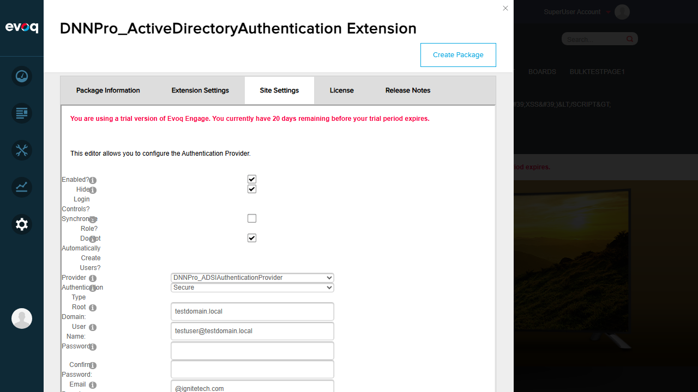
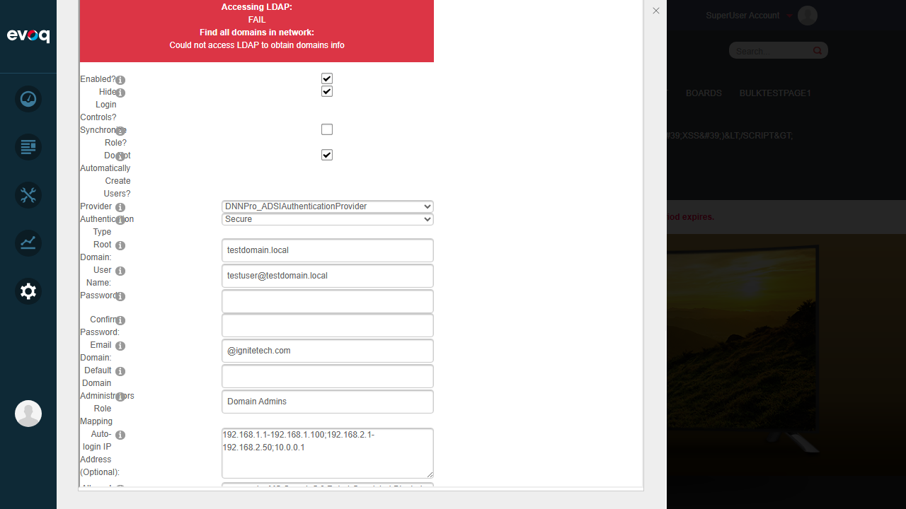
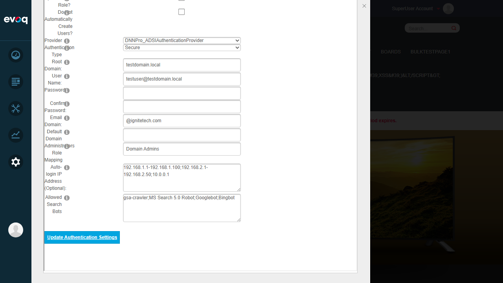

Auto User Creation - Test Report
- Extension:
- DNNPro_ActiveDirectoryAuthentication
- Feature Name:
- Auto User Creation
- Description:
- Automatically creates DNN user accounts for authenticated Active Directory users
- UI Location:
- Admin > Extensions > Authentication Systems > Active Directory > Settings > Auto Create Users
- Feature Priority:
- High
- Test Date:
- January 6, 2026
Code Analysis
Before testing, the relevant source code was reviewed:
Settings.ascx (line 30-33): UI checkbox "chkAutoCreate" with label "Do Not Automatically Create Users?"
Settings.ascx.cs (line 311): chkAutoCreate.Checked = config.AutoCreateUsers; - loads setting from database
Settings.ascx.cs (line 201): chkAutoCreate.Checked passed to UpdateConfig when saving
AuthenticationController.cs (line 287): if (!_config.AutoCreateUsers) - Note: The logic is INVERTED. When AutoCreateUsers is FALSE, users ARE automatically created. The UI label "Do Not Automatically Create Users?" aligns with this inverted logic.
Test Results
Test 1: Access Auto User Creation Settings
PASS
What was tested: Navigate to the Auto User Creation setting in the DNN admin interface.
Steps taken:
- Logged in as host user
- Navigated to Settings > Extensions
- Filtered by "Authentication Systems"
- Clicked Edit on DNNPro_ActiveDirectoryAuthentication
- Selected "Site Settings" tab to access the configuration

Figure 1: Active Directory Authentication settings page showing the "Do Not Automatically Create Users?" checkbox
Result: Successfully navigated to the Auto User Creation setting. The checkbox labeled "Do Not Automatically Create Users?" is visible and accessible.
Test 2: Disable Auto User Creation
PASS
What was tested: Check the "Do Not Automatically Create Users?" checkbox to disable automatic user creation.
Steps taken:
- Located the "Do Not Automatically Create Users?" checkbox (initially unchecked)
- Clicked to check the checkbox
- Clicked "Update Authentication Settings" to save
- Verified the setting persisted after page reload

Figure 2: Checkbox checked (auto-creation disabled)

Figure 3: Settings saved - checkbox remains checked, AD status messages displayed (failures expected without real AD)
Result: The checkbox was successfully checked and the setting persisted after saving. The AD connection status messages show failures as expected (no real Active Directory in test environment).
Test 3: Enable Auto User Creation
PASS
What was tested: Uncheck the "Do Not Automatically Create Users?" checkbox to enable automatic user creation.
Steps taken:
- Located the currently checked "Do Not Automatically Create Users?" checkbox
- Clicked to uncheck the checkbox
- Clicked "Update Authentication Settings" to save
- Verified the setting persisted after save
Figure 4: Checkbox unchecked (auto-creation enabled)

Figure 5: Settings saved - checkbox remains unchecked (auto-creation enabled)
Result: The checkbox was successfully unchecked and the setting persisted after saving. Auto user creation is now enabled.
Test 4: Setting Persistence Verification
PASS
What was tested: Verify that both enabled and disabled states persist correctly after saving.
Steps taken:
- Tested disabled state (checkbox checked) - saved and verified persistence
- Tested enabled state (checkbox unchecked) - saved and verified persistence
- Confirmed settings update correctly in both directions
Result: Both states (enabled and disabled) persist correctly after saving. The toggle functionality works bidirectionally.
Observations
The following test scenarios from the suggested list could not be tested via UI because they require a real Active Directory environment:
- Login with AD user not in DNN: Requires actual AD authentication - cannot test without AD infrastructure
- Verify user account is created: Requires successful AD login to trigger auto-creation logic
- Verify proper user profile population: Requires AD user attributes to be mapped to DNN profile fields
- Test user creation across multiple portals: Requires AD authentication across different portal contexts
- Verify deleted users can be re-created: Requires full AD authentication workflow to test re-creation scenario
Note: The AD connection status messages in the UI show "FAIL" for Global Catalog, Root Domain, and LDAP access. This is expected behavior in a test environment without Active Directory infrastructure.
Code Observation: The logic in AuthenticationController.cs uses inverted boolean logic - when AutoCreateUsers is false, users ARE automatically created. The UI label "Do Not Automatically Create Users?" correctly reflects this inverted logic, making the UI behavior intuitive despite the code implementation detail.
Test Summary
| Test Case |
Status |
| Access Auto User Creation Settings |
PASS |
| Disable Auto User Creation (check checkbox) |
PASS |
| Enable Auto User Creation (uncheck checkbox) |
PASS |
| Setting Persistence Verification |
PASS |
Overall Result: All UI-testable scenarios passed. The Auto User Creation setting can be toggled on/off and persists correctly. AD-dependent scenarios require real Active Directory infrastructure to test.